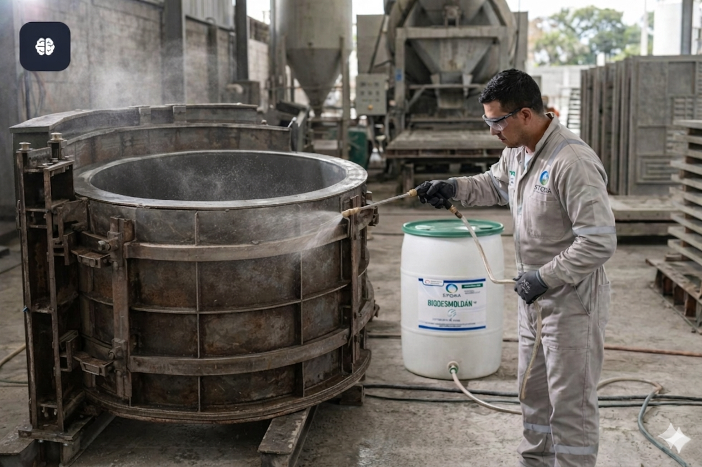
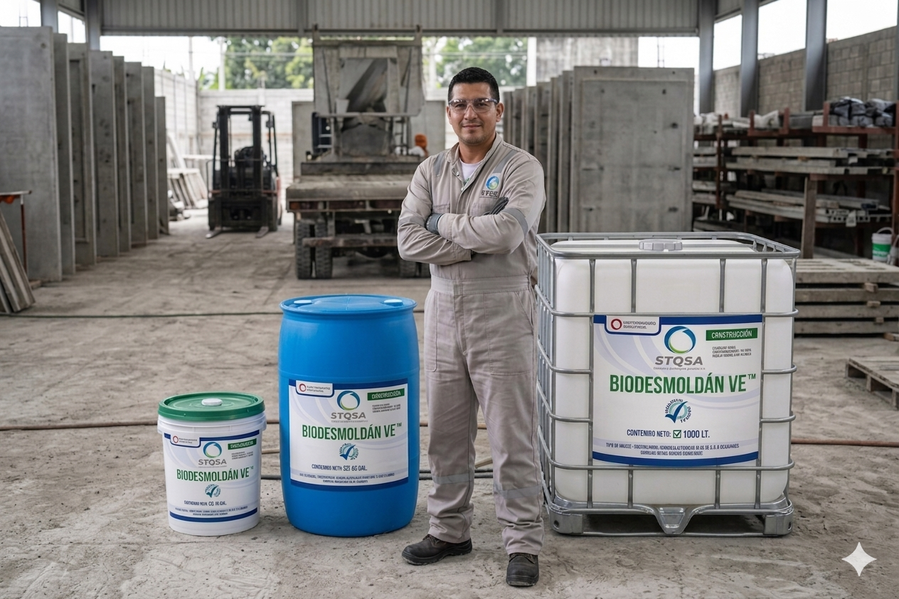

Desmoldantes de Alto Rendimiento: BIODESMOLDÁN™
Los desmoldantes para concreto de alta calidad son indispensables cuando se trata de la calidad de las superficies de los preformados. Basándonos en nuestra experiencia, hemos desarrollado nuestro producto de alto rendimiento BIODESMOLDÁN™ en estrecha cooperación con nuestros clientes. Hoy en día, estos desmoldantes se utilizan con éxito tanto en plantas de prefabricados como en ingeniería estructural y civil.

Requisitos para los desmoldantes modernos
El hecho de que podamos ofrecer productos alternativos y ecoamigables como desmoldantes para todas las aplicaciones, demuestra y prueba claramente que la calidad, la eficiencia y la conciencia ambiental pueden conciliarse.
Nuestros productos proponen una evolución y mejoría constante a través de nuestra estrecha cooperación con nuestros clientes y usuarios finales.
Composición de los desmoldantes para concreto
Los desmoldantes para concreto consisten en un fluido base en el que se disuelven los aditivos requeridos. Este fluido base puede ser aceite mineral, ésteres de aceite vegetal y en el caso de las emulsiones, agua.
Nuestra tecnología Biodesmoldán™ utiliza ácidos grasos y ésteres como sustancia separadora. Los ácidos grasos reaccionan químicamente con los cationes del agua del concreto para producir jabones metálicos. Estos jabones metálicos forman un punto de ruptura predeterminado, exacto entre el concreto y el molde después del endurecimiento de la mezcla.
Los ésteres se saponifican para formar ácidos grasos y alcohol debido a las propiedades de la mezcla de concreto, altamente alcalino (valor de pH mayor a 12). Los ácidos grasos reaccionan, como se ha descrito, con los cationes en el agua del concreto, mientras que el alcohol se integra en la matriz del cemento.
Además, el Biodesmoldán por su naturaleza química minimiza la formación de poros y cavidades por retracción, y brinda protección eficaz contra la corrosión para moldes metálicos.
Tipos de desmoldantes
| Característica | Grupo 1 – A base de aceite mineral, en parte con disolventes | Grupo 2 – Emulsiones | Grupo 3 – Base aceite de éster |
|---|---|---|---|
| Sustancia portadora | Aceites minerales / parcialmente con solventes (aprox. 80 a 95%) | Agua (aprox. 65 a 85%) | Ésteres de origen vegetal (aprox. 95 a 99%) |
| Sustancia separadora química | Parafinas líquidas (aprox. 2 a 15%) | Ácidos grasos y ésteres | Ésteres de origen vegetal (aprox. 95 a 99%) |
| Aditivos para minimizar poros y cavidades | Sí | Sí | Sí |
| Aditivos de protección anticorrosiva | Sí | Sí | Sí |
| Otros aditivos | – | Emulsionantes | Emulsionantes |
Tipos de desmoldantes para concreto y sus aplicaciones
BIODESMOLDÁN™: Agente desmoldante a base de ésteres de origen vegetal
Los desmoldantes biogénicos a base de ésteres de aceites vegetales adquieren cada vez más importancia por razones medioambientales y se utilizan cada vez con mayor frecuencia en la producción general de elementos prefabricados de concreto.
Estos productos son especialmente útiles en la producción de tuberías, protección de mezcladoras, durmientes de concreto o piedras en L, así como para el desmolde inmediato.
Biodesmoldán™ no solo es adecuado para aplicaciones en áreas protegidas y/o zonas restringidas por cuido del manto freático (zonas de protección del agua y su medioambiente), sino que también se puede utilizar en muchas otras áreas.
| Beneficios principales |
|---|
| Temperatura de aplicación hasta 130 °C |
| Reducción significativa de poros y cavidades por retracción |
| Superficies de concreto limpias y homogéneas |
| Protección efectiva contra la corrosión |
| No afecta la adherencia de yesos, adhesivos ni pinturas |
| Aplicable en superficies horizontales y verticales |

ACUODESMOLDÁN™
Por razones de salud y seguridad en el trabajo e higiene ambiental, los productos a base de agua se utilizan cada vez más en plantas de producción estacionarias. Las emulsiones que se utilizan como desmoldantes representan la última generación de productos en la línea ACUODESMOLDAN™. Las emulsiones se pueden utilizar en plantas de prefabricados en todos los moldes estándar, como los de acero, los recubiertos de plástico, etc. En comparación con los productos a base de disolventes, las emulsiones de BIODESMOLDÁN tienen ventajas distintivas gracias a su fácil manejo y aplicación.
Son productos no inflamables y prácticamente inodoros durante la pulverización. Sus efectos en términos de tecnología del concreto corresponden en la mayoría de los casos a los de los desmoldantes con disolventes. De esta forma, el usuario obtiene superficies de concreto expuesto impecables, libres de poros, cavidades y manchas, al tiempo que el molde se limpia fácilmente y sin mayor esfuerzo. Hemos logrado integrar una protección contra la corrosión demostrablemente mayor en algunos productos para su utilización en moldes de acero oxidable.
| Beneficios principales |
|---|
| Temperatura de aplicación hasta 70 °C (temperatura del molde) |
| Previene en gran medida la formación de poros y cavidades |
| Proporciona superficies limpias y uniformes |
| Contiene una protección contra la corrosión muy eficaz para moldes de acero |
| No dificulta la posterior adherencia de yesos, adhesivos ni pinturas |
| Aplicable en superficies horizontales y verticales |
| No inflamable y casi inodoro durante la aspersión |
| Fácilmente biodegradable e inocuo |

BIODESMOLDÁN VE™
BIODESMOLDÁN VE™ es un agente desmoldante biogénico formulado a base de ésteres de origen vegetal, especialmente desarrollado para aplicaciones en elementos estructurales de gran tamaño. Su formulación incorpora una viscosidad optimizada, que permite una mayor adherencia sobre superficies verticales e inclinadas, garantizando la formación de una película uniforme y estable sobre el molde.
Esta característica reduce el escurrimiento del producto previo al vaciado del concreto, asegurando un desempeño eficiente en condiciones donde se requiere mayor permanencia del desmoldante. Es ideal para la fabricación de vigas, elementos pretensados, puentes y otras estructuras prefabricadas de gran volumen.
Además, mantiene las ventajas medioambientales propias de los desmoldantes de origen vegetal, siendo apto para su uso en entornos donde se requiere minimizar el impacto ambiental sin comprometer la calidad del acabado superficial del concreto.

Resultados en Obra
Estos son algunos de los acabados y superficies obtenidas mediante el uso de nuestra línea BIODESMOLDÁN™ en proyectos reales.